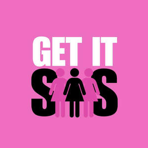
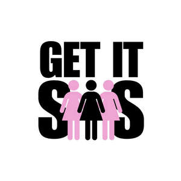

Trade Mark Journal No.2025/017 25 April 2025
UK00004175021 17 March 2025 (16,25,41)
Mark 1

Mark 2

- Class 16
- Printed educational materials; printed guides and booklets; printed books; printed pamphlets; printed publications; printed brochures; stationery; notebooks; calendars; printed posters; printed event programs; business cards; greeting cards; printed invitations; printed labels; stickers; printed journals; printed flyers; printed newsletters; printed promotional materials; pens; printed diaries; printed binders; paper and cardboard goods; badges; printed fundraising materials; printed reports; printed thank you cards; printed donation receipts; printed event tickets; printed training manuals; printed social impact surveys; printed letterheads; printed signage; printed promotional flyers; fundraising kits; branded stationery; printed certificates; Commemorative non-metallic trophies; award ribbons; award diplomas; wristbands; Printed coupons; Printed tickets; Printed newsletters; Printed manuals; Printed menus; Adhesive printed labels; Printed lessons; Computer programmes in printed form; Cartoon strips [printed matter]; Printed training materials; Printed patterns for dressmaking; Printed sewing patterns; Photographic printing paper; Promotional publications; Printed promotional material; Advertising posters; Gift bags; Padded bags of card; Padded bags of paper; Paper gift bags; Plastic shopping bags; Paper bags and sacks; Paper for bags and sacks.
- Class 25
- T-shirts; hoodies; sweatshirts; sweatpants; tracksuits; jackets; jeans; shorts; skirts; dresses; activewear; sportswear; sports bras; leggings; tank tops; gym wear; pajamas; underwear; lingerie; socks; hosiery; shoes; boots; sneakers; sandals; slippers; flip-flops; high heels; flats; loafers; formal shoes; converse-style shoes; shoes for sports activities; caps; beanies; baseball hats; fedoras; bucket hats; headbands; scarves; gloves; belts; ties; bandanas; swimwear; bikinis; swimsuits; cover-ups; dresses (formal and casual); suits (men’s and women’s); blazers; vests; cardigans; jumpers; polo shirts; blouses; shirts; hooded sweatshirts; rompers; jumpsuits; tracksuit bottoms; athletic shoes; running shoes; skate shoes; footwear for outdoor activities; work boots; insoles for shoes; headgear for specific sports; custom-designed clothing; clothing for special occasions; uniforms; costumes; wristbands; Scarves, gloves, hats; maternity wear; post-surgery clothing; children’s clothing; baby clothes; footwear for children; bridal wear; men’s wear; women’s wear; men’s suits; women’s blazers; denim wear; activewear for yoga, running, or gym; workout leggings; sports tank tops; jogging pants; skorts; sports jackets; fleece jackets; ponchos; raincoats; overcoats; leather jackets; faux fur jackets; fashion scarves; printed merchandise (such as t-shirts and hoodies with designs); printed hats.
- Class 41
- Education services; providing online courses or educational resources; organizing and hosting events; entertainment services; organizing competitions; publishing services; mentoring services; career guidance services; networking services; vocational guidance (education or training advice); non-downloadable electronic publications; arranging and conducting of educational conferences; organizing of community sporting and cultural activities; audio and video production services; arranging exhibitions for cultural or educational purposes; providing entertainment in the form of podcasts; social club services (entertainment or educational); organizing charitable events; charitable services (education); organizing cultural and community events; providing entertainment for charitable purposes; mentorship and coaching services for charitable purposes; arranging charitable workshops or seminars; Provision of online non-downloadable classes, e-lessons, e-books and PDF learning materials; Educational services provided online; providing online newsletters; publishing of texts; Production of podcasts; Provision of entertainment via podcast; Creation [writing] of podcasts; Creation [writing] of educational content for podcasts; Provision of entertainment via podcasts; Production of video and audio recordings; Audio and video recording services; Publication of audio books; Entertainment services for sharing audio and video recordings; Presentation of radio programmes; Audio, film, video and television recording services; TV and radio presenter services; Syndication of radio programmes; Video taping; Production of radio broadcasts; Production and presentation of radio programmes; News programme services for radio or television; Production of audio recordings; Presentation of live comedy shows; Audio recording and production; Audio recording studio services; Audio and video production, and photography; Production of video recordings; Providing audio or video studios; Audio recording services; Providing age ratings for television, movie, music, video and video game content; Hire of video recordings; News syndication for the broadcasting industry; Editing of audio recordings; Operation of video and audio equipment for the production of radio and television programs; Providing audio or video studio services; Audio production; Production of educational sound and video recordings; Rental of audio recordings; Audio and video editing services; Selection and compilation of pre-recorded music for broadcasting by others; Recording, film, video and television studio services; Rental of audio tapes bearing recorded music; Studio services for the recording of videos; Recording studio services for videos; Radio entertainment; Production of audio master recordings; Publication of music; Video recording services; Recording of music; Music recording; Publication of music books; Video and audio rental services; Rental of audio books; Audio recording and production services; Rental of video recordings; Production of sound and video recordings; Editing of video recordings; Audio, video and multimedia production, and photography; Production of television and radio programming; Entertainment services for matching users with audio and video recordings; Digital music [not downloadable] provided from mp3 web sites on the internet; Television and radio programming [scheduling]; Video recordings [not downloadable] provided from the internet; Production of video tapes and video discs; Production of audio programs; Rental of audio tapes; Video tape production; Radio programming [scheduling].
India Jacobs